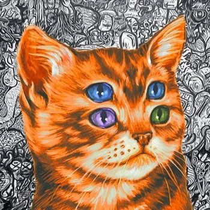

Luke Smith é o tipo de CrIaDoR dE CoNTeÚdO que você encontra e muda o seu pensamento sobre a sua
vida. Os vídeos dele me fez re-pensar sobre a situação da internet e me ajudou em muitas coisas, como
o vídeo dele ensinando VIM (o editor que eu tô usando agora), que por acaso foi por causa de um vídeo dele
que eu tive a ideia de criar esse site
. Em geral, os vídeos dele são muito bons, recomendo dar uma checada.
O site dele

O Kenny (dono do canal) faz vídeos variados, sendo as vezes de notícias, programas ou até mesmo colinária.
Ele informa bem os assuntos e as vezes faz uns vídeo de meme como esse aqui
Esse é o tipo de site que todo mundo deveria acessar pra ver se o seu programa é lixo ou não.
Nele você pode ver uma lista moderável de programas/serviços e se eles são spyware ou não (spyware
é o programa que rouba informações do usuário dele como por exemplo catalogar todas as conversas dele
se for um programa de conversa como discord). Recomendo a todos.